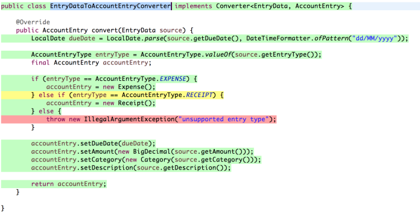

Cobertura de testes
Publicado em:
@adolfoweloy
Experiências com ferramenta de cobertura de testes
Quando se fala em cobertura de testes, pode vir a mente a idéia de relatórios contendo números de várias métricas de software em busca de apresentar a qualidade geral de um sistema. Muitos já devem ter se perguntado qual o verdadeiro valor desses números. Algumas métricas combinadas, realmente podem ajudar, porém uma métrica analisada sozinha como um número alto de cobertura de testes não significa qualidade. Quando falo em qualidade, estou considerando um sistema de fácil evolução, fácil manutenção, que seja legível e que não seja frágil, ou seja, que possa ser alterado sem que o desenvolvedor tenha medo de introduzir novos bugs.
Ainda considerando a métrica de cobertura de testes, nem mesmo 100% de cobertura pode garantir a qualidade dos testes e do código sendo desenvolvido. Como falarei mais adiante, há situações onde esse tipo de métrica pode ser bem útil.
Para aqueles que já se depararam com alguma situação ou projeto onde era necessário ter uma alta cobertura de testes, tal experiência pode ter sido frustrante.
Essa frustração pode levar muitos desenvolvedores a abandonarem ferramentas de cobertura, deixando de aproveitar alguns benefícios interessantes.
O objetivo desse post é justamente mostrar quando é útil uma ferramenta de cobertura de testes (e quando não). Nesse post, não vou explicar como utilizar uma ferramenta de cobertura de testes nem como funcionam, pois já existe material suficiente na web e alguns estão disponíveis através de links no final do post.
Quando uma ferramenta de cobertura pode ajudar?
Aqui no Elo7, comecei a utilizar uma ferramenta de análise de cobertura de testes integrada à IDE (no caso o Eclipse). A ferramenta que instalei foi o Eclemma que fornece um feedback visual mostrando as partes do código que estão cobertas. A figura 1 exibe um trecho de código que foi analisado pelo Eclemma.

Figura 1 – Exemplo de análise de cobertura visual gerado pelo Eclemma
Ao colorir as linhas de código após a análise, é possível detectar as seguintes situações:
- Linha de código verde quando coberta por testes;
- Linha de código amarela quando um cenário não foi testado (geralmente uma condição de um if);
- Linha de código vermelha quando determinado trecho de código não está coberto por testes.
A idéia de utilizar tal ferramenta, não é para gerar relatórios com o objetivo de mostrar altos níveis de cobertura de testes.
Venho utilizando essa ferramenta ultimamente apenas para validar se um teste que acabei de escrever, realmente cobre o que faz sentido sobre a regra de negócio sendo implementada. Além disso, essa ferramenta também tem ajudado bastante durante a realização de sessões de Code Review. Veja como aplicamos algumas práticas de XP aqui no Elo7.
Além de mostrar código não testado, usar uma ferramenta de cobertura como essa tem ajudado a analisar melhor o design de um código conforme os dois exemplos de situações mostrados abaixo:
-
Ao perceber que um determinado bloco de código não estava sendo coberto, eu deveria criar um novo cenário de teste. Porém, esse bloco de código não fazia sentido para a classe testada (violava a coesão do método). Ao invés de simplesmente forçar o aumento de cobertura criando um teste, esse bloco de código foi extraído como um método para outra classe (onde fazia mais sentido). Após realizar esse refactoring, o código ficou mais testável e os métodos ficaram mais coesos.
-
Um outro exemplo interessante é que algumas vezes ao encontrar um método sem cobertura, pude perceber que o método nem mesmo era utilizado. Vale a pena criar um teste para um trecho de código que não é utilizado? Se o objetivo for criar um código limpo, então vale mais a pena apagar o código que não é utilizado do que criar um teste!
Quando uma ferramenta de cobertura não ajuda?
Como já foi dito, o aumento da cobertura de testes dirigido por uma meta numérica (ex. 90%, 95% ou 100%) não garante qualidade do código e nem mesmo a qualidade dos testes. É possível encontrar projetos em que para atingir tais metas, alguns desenvolvedores acabam criando testes sem assertions. Isso mesmo, sem assertions apenas para gerar um relatório cheio de barras verdes (Isso eu chamo de CDD – Color Driven Development). Que tipo de segurança esses testes podem oferecer para um refactoring ou adição de nova feature? Um texto bem legal que cita a criação de testes sem assertions é o post Assertion Free Testing do blog do Martin Fowler.
Ao estipular uma meta alta e rígida de cobertura de código, além de não ser possível garantir qualidade, é provável que alguns desenvolvedores acabem por criar aversão a testes, uma vez que podem aparecer muitos testes sem sentido. Criar código que não faça sentido e que não seja realmente útil causa frustração em muito desenvolvedor.
Conclusão
A conclusão que tiro dessa experiência que venho realizando com a ferramenta de cobertura Eclemma, é que esse tipo de ferramenta é muito útil nos cenários em que apresentei servindo para guiar o desenvolvimento do código. Se a meta for atingir 100% de cobertura apenas para gerar um relatório “bonito”, então não vejo valor algum. Mostrar que 100% do código está sendo testado não garante que o código está sendo testado com qualidade. Existe um post que também vale a pena ler, cujo título é Dashboards promote ignorance onde o autor cita uma frase que acho muito interessante:
metrics are much more useful when they report bad news.
A lição que podemos tirar dessa frase, é que vale mais uma métrica que mostra onde estão os problemas do que uma métrica onde o único objetivo é não ver problemas.